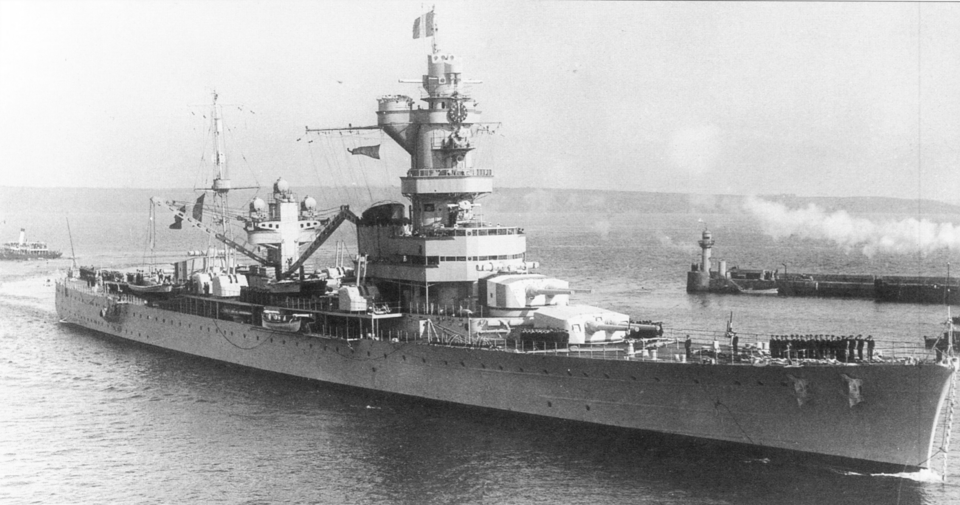

Algérie
Crucero de Francia, perteneciente a la clase Algérie. Fue el último crucero pesado francés construido antes de la Segunda Guerra Mundial.

Diseño y función
Algérie pertenecía a la clase Algérie. Crucero pesado para combate y operaciones de superficie. Sus prestaciones se detallan en la tabla técnica, con las fechas o condiciones disponibles en la referencia.
Operaciones y trayectoria
Fue el último crucero pesado francés construido antes de la Segunda Guerra Mundial. Participó en operaciones del Mediterráneo, incluido el bombardeo de objetivos italianos en junio de 1940.
Destino final y conservación
Autohundido con la flota francesa en Tolón el 27 de noviembre de 1942; sus restos fueron desguazados.